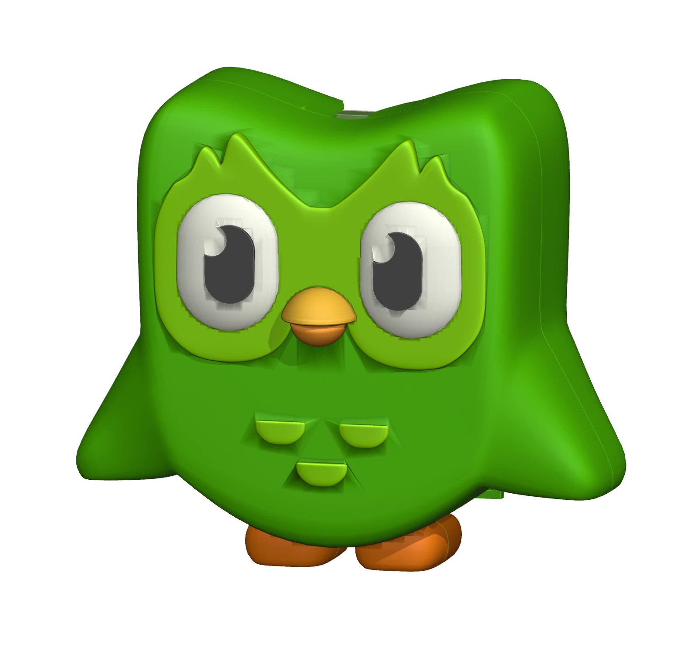
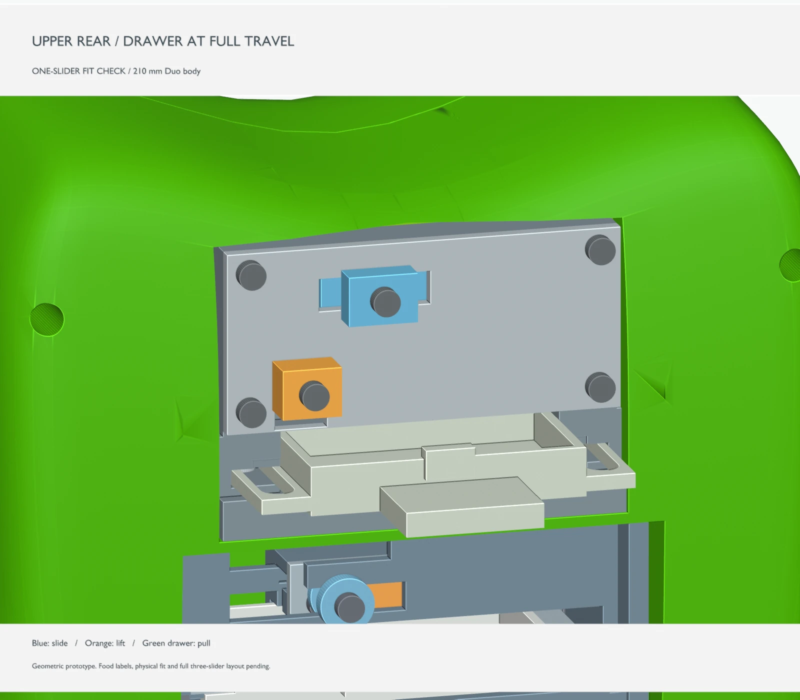
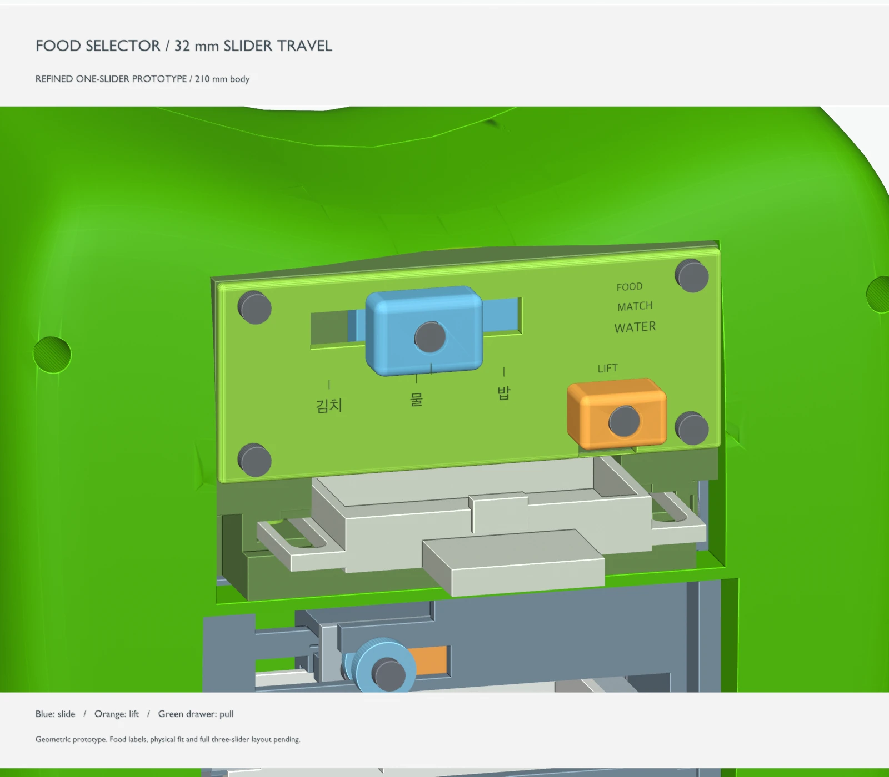
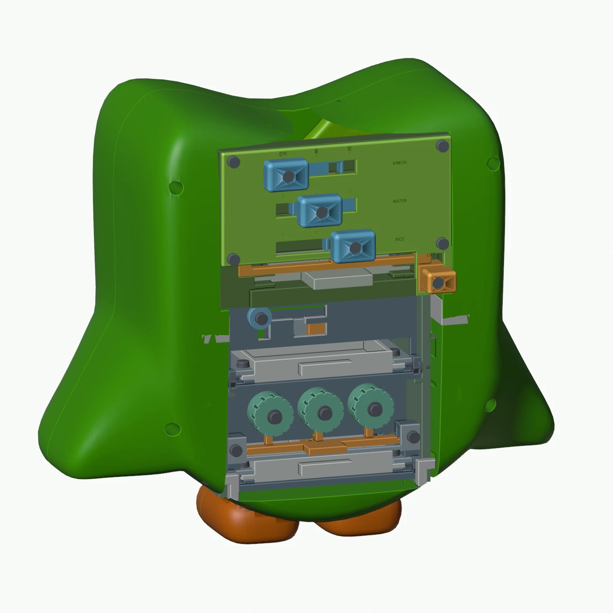
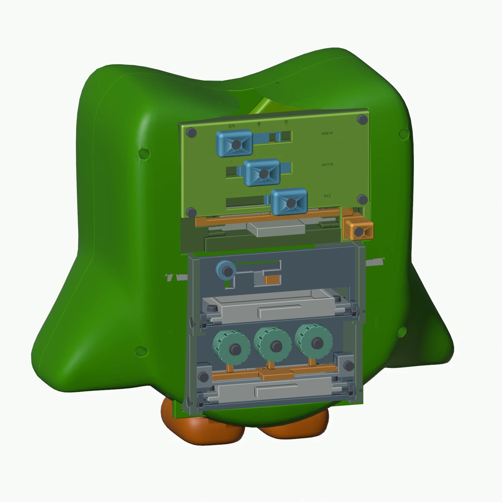
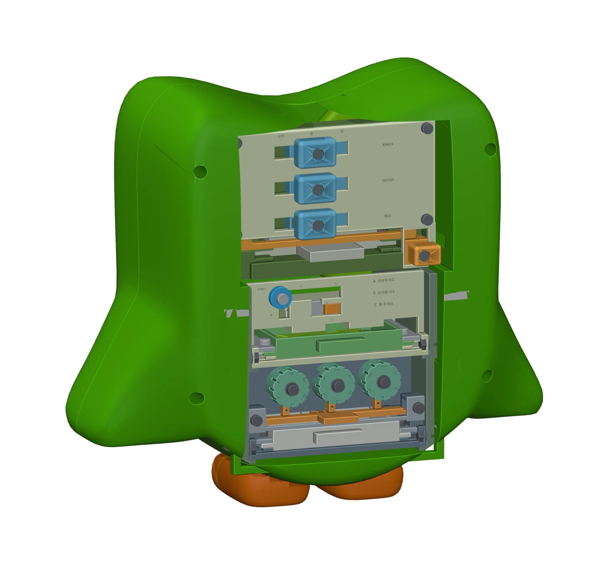
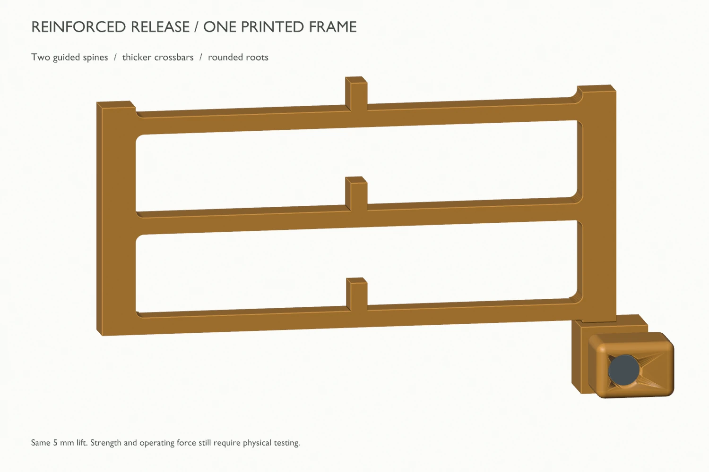
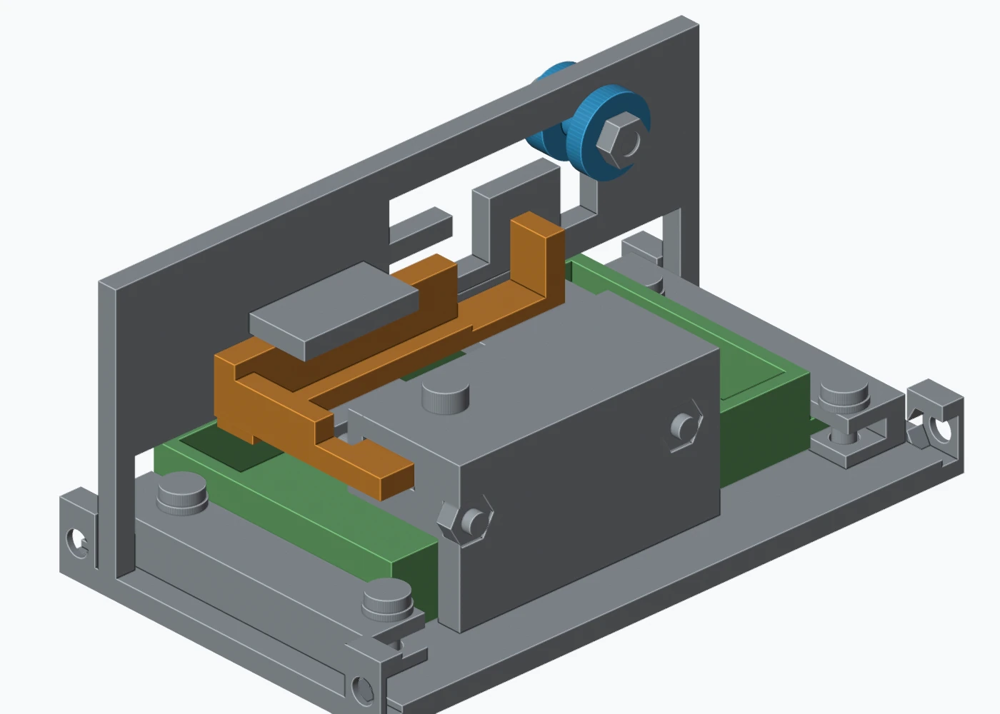
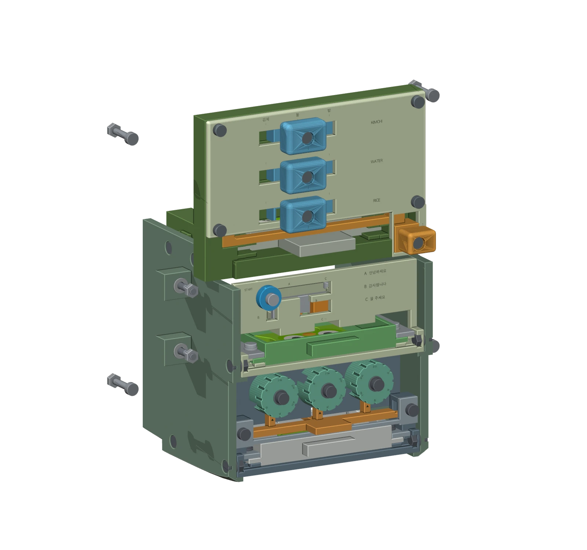

USC class project · October 2026
Learning Korean.
One physical puzzle
at a time.
A Duolingo-inspired tabletop experience, refined around how people reach, slide, release, and retrieve.
Printing in progress
I directed the learning concept and iterative design, using AI-assisted Blender development to turn a restaurant activity into three mechanisms inside Duo.

My contribution
Experience concept, learning sequence, usability critique, interaction layout, and review of AI-generated model revisions.
How I developed it
Blender and Codex for geometry, animation and design review; PrusaSlicer for print preparation. Original Duo character by Wiertarka.
What is established
Digital iteration and print preparation are complete for the current prototype. Printing began October 16; assembly and physical testing are next.
Give every action a reason.
The restaurant menu is both a Korean reference and the operating guide. Each solved activity releases a piece; the assembled Duo becomes the ticket for a photo on the restaurant wall.
- Count & turnFind the counts, match Korean numbers on the wheels, and release a drawer.
- Match & slideAlign kimchi, water and rice with their Korean names to earn another piece.
- Follow & retrieveUse greetings and a polite request to follow the maze, then complete Duo.
This is the intended experience. Learning outcomes have not been tested, and the maze does not verify pronunciation.
First iteration
Give the slider room to move.
The first selector had little travel and a small control. I flagged that it looked primitive and needed more movement. The next model doubled the designed travel from 16 to 32 mm and used a larger rounded grip with clearer alignment marks.




The UX intention: make the selection action more distinct and easier to grasp. Physical comfort and operating force still need testing.
Second iteration
Fitting inside was not enough.
Once the mechanisms worked in the model, I noticed the controls were still too deep inside the bird to use comfortably. I asked to bring them toward the rear edge. That revision moved the number wheels outward 19 mm and the maze 25 mm.




The tradeoff: easier access consumed the outer envelope. I then set a clearer rule: keep mechanisms inside Duo when closed, while allowing drawers to extend during retrieval.
Protect the character. Keep the action accessible.
I rejected the earlier tall control stems and asked for a cleaner overall appearance. The current arrangement brings all three activities to the rear while retaining the recognizable front silhouette.
The current enclosed layout supersedes the outward-shift study above. The earlier 19/25 mm shifts are iteration history, not final dimensions.


Third iteration
Review the action behind the control.
I questioned whether the food release could move all three catches without breaking. I also flagged that the maze latch looked unsupported. Those concerns led to a reinforced release frame and added support close to the maze latch.




What changed in my review: I looked beyond whether a drawer opens in an animation to ask how its control is supported, held in place, reset, and accessed.
These are geometry and design reviews. They do not establish printed strength, friction, durability or safe operating force.
See the sequence in the current model.
Three different actions share one interaction rhythm: solve, release, retrieve, reset.
A 20-second edit of the saved model's prescribed animation, shown at twice its original timeline speed. It demonstrates intended movement, not physical operation.
Now printing.
Next, put it in someone's hands.
The current package includes the labeled mechanisms, three reward pieces, print plates and assembly instructions. I started printing on October 16.
The next review will check whether someone can understand the menu, reach and move each control, retrieve the pieces, and reset the box. Physical fit, strength and repeated operation remain unverified.

Tools, authorship & credits
My role: learning and experience concept, design direction, usability critique, and decisions on control reach, travel, support and appearance. AI assistance: Codex generated concept diagrams, Blender scripts and geometry, animations, checks and print-preparation files under my direction. This case study presents model iterations, not independent hand sketches.
Base asset: “Duolingo bird” by Wiertarka, used under CC BY 4.0. Adapted with shell preparation, openings and integrated mechanisms. Rendered colors communicate the design; the printed finish is not yet verified.
Student concept inspired by Duolingo. No employment, sponsorship or official partnership is implied.